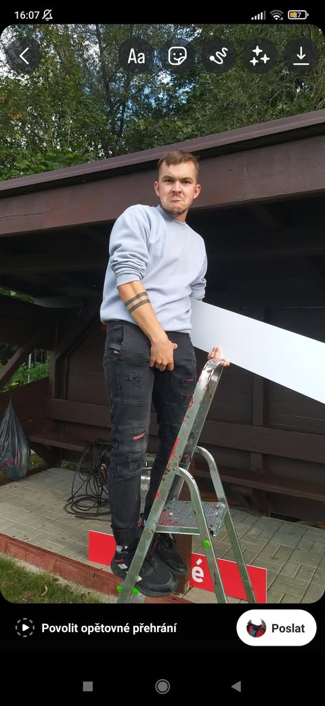
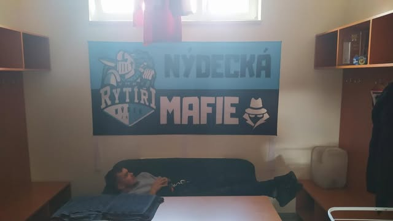
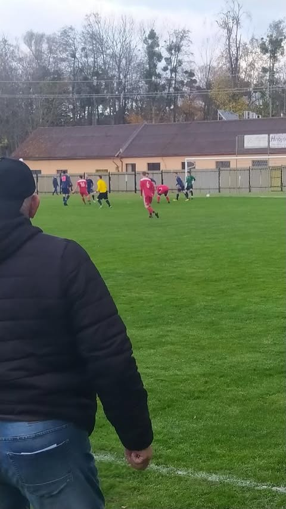
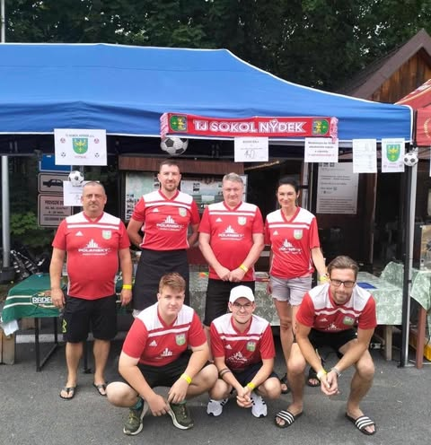

TJ Sokol Nýdek je nejlepší!
V kraji se udržíme!
Milan Szuska ani metr ani tuška společně s kšiltovkou dozadu to zachrání!
   vzduchem se šíří zvěst že Nýdek je už v takovém určitém bludném kruhu, když nedá pískají hned proti nim
prohra 0:6 proti týmu FC niebory vrátila Nýdek zpět do reality bojů o sestup... po předešlých 3 vyvedených utkáních(2-1-0) je tak vysoká prohra velký vykřičník pro trenéra nýdku Koloničného
| vítězství | prohry | remízy |
|---|---|---|
| 4 | 12 | 1 |